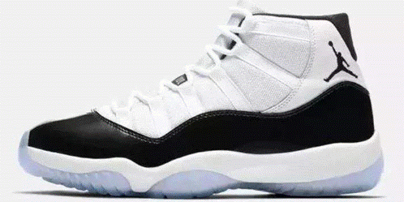

|  | air jordan 11是乔丹公司设计生产的一款AJ篮球鞋，发售于1996年。该款运动鞋的设计灵感源于割草机外壳，采用sole气垫，球场表现更好。 乔丹本人曾在公开场合不止一次的表达过自己对11代的情有独钟。这是篮球鞋历史上，第一双采用了漆皮设计的作品，它使得球鞋不易被拉抻，轻便而华丽，看起来更像是一个亮丽的跑车外壳。鞋面的尼龙材质彻底减轻了整体负重，在AIR JORDAN系列的历史上， Tinker和设计团队利用高速摄影技术捕捉乔丹在球场上的动作，逐帧放映并分析运动状态下球鞋的变化，最终发现了问题，并确定要在鞋底加入全掌纤维碳板。这种最初在橄榄球鞋上被应用的技术，有着防止球鞋扭曲和快速校正鞋底的功效，球鞋受力变形后，能够很快恢复，并且给后卫们提供了更快的启动速度，为了突出这一亮点，他们还决定鞋底再次采用水晶底的设计。 |